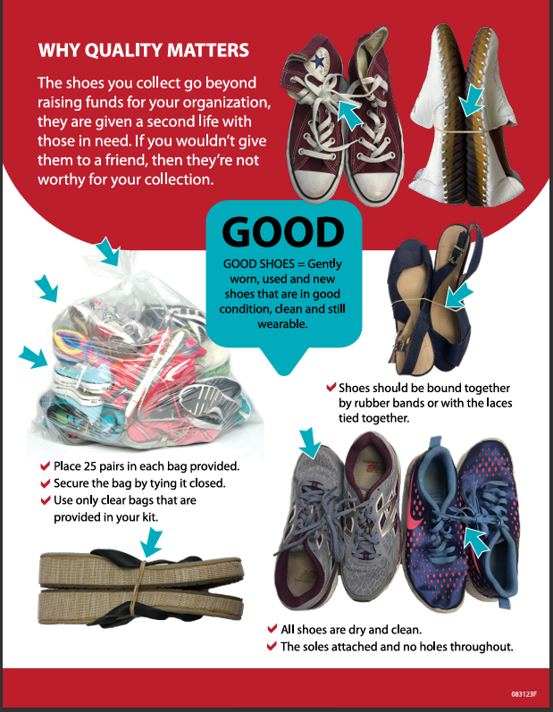
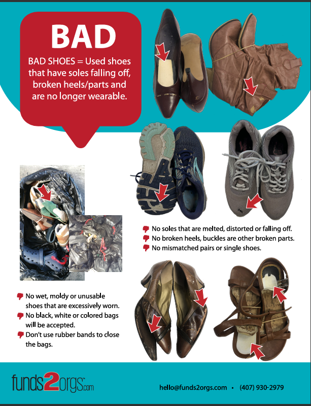
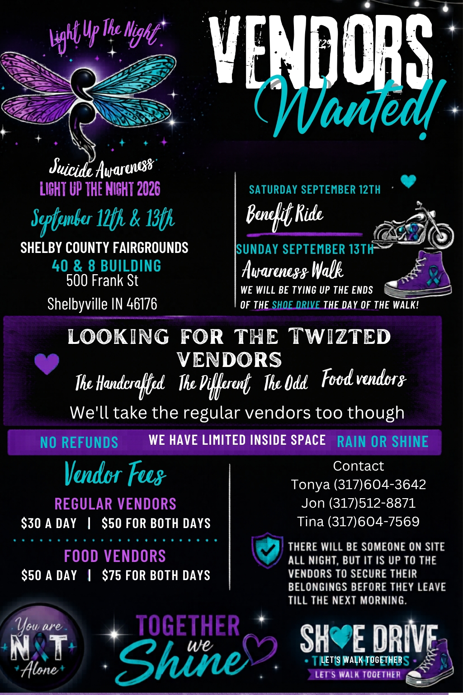

Shoe Us the Love!
Donate gently worn, used & new shoes — raise funds for mental health advocacy
Every pair you donate helps Twizted Journeys fund events, awareness programs, and peer support — while giving shoes a second life through micro-entrepreneurs in developing countries.
What Is the Shoe Drive?
A no-cost fundraiser that turns your closet cleanout into community support.
Twizted Journeys has partnered with Funds2Orgs to run a shoe drive fundraiser — one of the most rewarding, zero-cost ways our community can support our mission.
Here's how it works: you collect gently worn, used, and new shoes from friends, family, neighbors, and coworkers. We box them up together. Funds2Orgs pays Twizted Journeys based on the weight of shoes collected. Every pound raised funds our S.A.F.E. events, peer support groups, and mental health awareness programs.
The shoes aren't wasted — they're redistributed to micro-entrepreneurs in developing countries who sell them to support their families. Your donation helps two communities at once.
Why It Matters
Twizted Journeys is fully volunteer-powered. Every dollar from this shoe drive goes directly toward events, awareness materials, and peer support programs — at no cost to participants.
Donations are tax-deductible as Twizted Journeys, Inc. is an IRS-recognized 501(c)(3) public charity.
What Shoes to Donate
Not all shoes qualify — here's what we can and cannot accept.

- Gently worn, used, or new shoes
- All styles — sneakers, boots, heels, flats, sandals, cleats
- All sizes — children, women, men
- Shoes in wearable condition
- Pairs bound together (laces tied or rubber band)
- Clean & dry with soles attached

- Broken heels or buckles
- Soles melted, distorted, or falling off
- Single or mismatched shoes
- Wet, moldy, or unusable shoes
- Shoes with holes in the soles
- Roller skates, ski boots, or ice skates
When in doubt — if you'd wear it, donate it. If you'd trash it, skip it.
How to Participate
Three easy steps — then drop off or we'll arrange a pick-up.
Collect
Start gathering gently worn, used, and new shoes from your own closet. Then ask friends, family, neighbors, and coworkers to donate too. Every pair counts!
Bag & Pair
Tie each pair together with laces or a rubber band. Bag 25 pairs per clear bag (bags provided — see bagging guide below). Knot the bag closed at the top.
Drop Off
Bring bagged shoes to the designated collection point, or contact us to arrange a pick-up. We'll handle the rest!
Questions? Ready to help? Reach out directly:
âœ‰ï¸ Email UsBagging Instructions
Proper bagging maximizes what we raise — follow these steps from Funds2Orgs.
✅ DO
- Use the provided clear bags
- Add 25 pairs per bag
- Secure pairs by tying laces or rubber banding together
- Place shoes toe to heel to prevent tearing
- Tie a knot at the top of each full bag
- Keep bags dry and avoid moving them excessively
⌠DON'T
- Use black, white, or colored bags
- Use rubber bands to close the bag (only to pair shoes)
- Overstuff bags beyond 25 pairs
- Include wet, moldy, or broken shoes
- Mix single shoes or mismatched pairs
- Leave bags open at the top
Need more bags? Contact us at info@twiztedjourneys.org or pick up approved 30”“35 gallon clear bags at Home Depot or Lowe's.
Spread the Word
The more people who know, the more shoes we collect — and the more we raise.
Post on Facebook
Share the drive publicly on your personal page and ask friends to share it too. Tag @TwizedJourneys so we can reshare. Post photos of your collected shoes as you go!
Instagram & TikTok
Show off your donation pile! Tag us @twiztedjourneys and use the hashtags below. Short videos of bags filling up get great engagement and inspire others.
Ask at Work & School
Workplaces, churches, gyms, and schools are great collection points. Ask if you can set up a box. The more locations, the more shoes!
Ready to Shoe Us the Love?
Start collecting today. Every pair makes a difference — in Shelbyville and around the world.
Get Involved
Three ways to take the shoe drive further — as a volunteer, a donation box host, or an event partner.
Volunteer
Help us collect, count, bag, and transport donations. Volunteers are the backbone of this drive — no experience needed, just a willingness to show up.
✉ Sign Up to VolunteerHost a Donation Box
Is your business, church, gym, school, or organization willing to host a shoe donation box? We provide everything you need — just set it and let the shoes come to you.
✉ Request a Donation BoxInvite Us to Your Event
Hosting a community event, festival, market, or gathering? Invite Twizted Journeys to set up a shoe drive table. We handle everything — and it adds mission-driven impact to your event.
✉ Request a Table at Your Event
Twizted Journeys at a community event — bringing the shoe drive to where the people are.